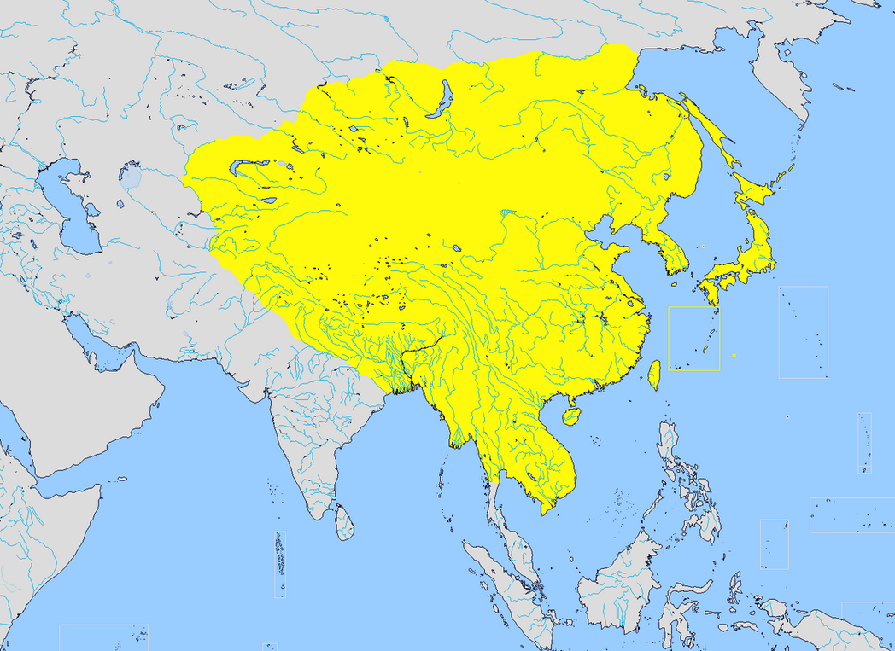

The Chinese Empire vs. The Japanese Empire: A Tale of Two Empires
By: Hazel
Introduction
The Chinese and Japanese empires hold a significant place in world history. Their rise and fall have influenced the course of global politics, economics, culture, and technology. From their ancient origins, to their modern struggles and triumphs, the tale of these two great empires is one of awe-inspiring conquests, monumental failures, and enduring legacies.
As two major powers in Asia, the differences between the Chinese and Japanese empires are fascinating to explore. Both empires had their unique political structures, economic systems, cultural achievements, and military strategies. Yet, despite their similarities and differences, these two great empires have a long and complex history of interactions that shaped the fate of the region.
In this website, we delve deep into the history of the Chinese and Japanese empires, exploring their origins, rise to power, expansion, conflicts, and ultimate downfall. From the Qin dynasty to the Meiji Restoration, this website offers an in-depth analysis of key periods and events that shaped the two empires.
So, whether you are a student of history, a fanatic of Asian culture, or simply a curious traveler, join us on this journey to discover the rich and captivating history of the Chinese Empire vs. The Japanese Empire: A Tale of Two Empires.
ad space
Political Systems
As we delve deeper into the histories of the Chinese Empire and the Japanese Empire, it's important to understand the stark differences in their political systems. While both empires started as monarchies, their paths diverged as they evolved and dealt with outside influences.
In the Chinese Empire, the political system was grounded in Confucianism, which placed emphasis on hierarchical order, respect for authority, and the importance of education. The emperor was seen as the ultimate authority figure and was surrounded by an elaborate bureaucracy. The imperial examination system allowed individuals to rise through the ranks based on their merits instead of their social status, creating a merit-based system that was admired globally.
On the other hand, the Japanese Empire was headed by an emperor who was considered a symbol of the state rather than an actual ruling figure. Instead, the real power was held by the shogun and a council of daimyos, or feudal lords. The samurai class held a significant influence in Japanese society and were fiercely loyal to their leaders. This system of government was often characterized as decentralized and feudal.
When Western powers began to expand into China and Japan in the 19th century, both empires had to adapt to the changing political climate. The Chinese Empire struggled to modernize and cope with the influx of foreign ideas, which ultimately led to the downfall of the Qing Dynasty. Japan, on the other hand, was able to rapidly modernize and become a formidable global power in a matter of decades.
The political systems of the Chinese Empire and the Japanese Empire played a crucial role in their respective histories and ultimately shaped their legacies. By examining these systems, we gain a deeper understanding of the empires and the challenges they faced.
ad space
Economic Systems
The Chinese Empire and the Japanese Empire are two of the most prominent empires in the history of the world. These two powerful kingdoms transformed their respective nations into economic powerhouses within their regions. However, the economic systems of these two empires are fundamentally different, and these differences have had profound effects on the development trajectories of these ancient nations.
The Chinese Empire relied primarily on a system of peasant agriculture, which was the backbone of the empire's economy for centuries. The Chinese peasants were essentially self-sufficient, providing for their own needs and also contributing to the imperial economy through taxes and tribute. The government played a significant role in managing the economy through various measures like regulating trade and controlling the supply of money. Despite this, the Chinese economy remained primarily agrarian, with little involvement from merchants or traders.
In contrast, the Japanese Empire embraced a more commercial economy, with its long-standing feudal system giving way to a more market-oriented system during the Tokugawa period. The government was instrumental in supporting this transformation by promoting trade and commerce, as well as developing transportation and communication infrastructure. Japan's economy grew rapidly, and by the mid-19th century, it was becoming one of the world's most advanced economies.
The differences between these two economic systems had far-reaching consequences. The Chinese Empire's peasant-oriented economy made it difficult to adapt to modern times, and it lagged behind the West and Japan in terms of industrialization and technological innovation. Meanwhile, Japan's commercial economy fueled its rapid ascent, culminating in its victory over China in the first Sino-Japanese War of 1894-95.
In conclusion, the economic systems of the Chinese Empire and the Japanese Empire illustrate how different approaches to economic development can shape the trajectories of nations. While the Chinese Empire clung to its traditional agrarian system, Japan embraced a more commercial economy, ultimately leading to its success as a modern industrialized nation.
ad space
Military Strength
A Comparison of Military Might: The Chinese Empire vs. The Japanese Empire
The military strength of an empire is often the deciding factor in determining its success or failure. When it comes to the Chinese and Japanese empires, both are renowned for their military prowess, history and ideology, but there are significant differences in their approach to warfare, technology, tactics, and leadership.
The Chinese Empire throughout its thousands of years has been characterized by continuous innovation and sophistication in military techniques, proven time and again in battles, wars and conquests. At the height of the empire, the use of the crossbow, chariots, and cavalry tactics was considered most effective in warfare. Chinese archers were highly skilled and were instrumental in several victorious battles. The Chinese army also used gunpowder as early as the ninth century, and firearms became more widespread gradually replacing the crossbow as the dominant weapon. By the 1800s, however, technological advancements left the Chinese Empire trailing behind Western nations.
The Japanese Empire, on the other hand, had adopted an open-door policy to modernization by the late 19th century. This policy enabled the country to build a strong military force based on modern Western methods, thereby giving it an edge over the Chinese. The Japanese military embraced modern technology and innovative tactics, including the use of machine guns, long-range artillery, and naval warfare. The empire's ability to develop economical and reliable weaponry contributed to its success, which allowed the army to mobilize quickly and engage in tactics that built a reputation for themselves.
The Chinese and Japanese Empires at their heights represented two great military and cultural superpowers of their time. Both nations developed unique forms of warfare that helped shape their respective histories. While the Chinese Empire was recognized for its sophistication, innovation, and long-standing commitment to military strategies, the Japanese Empire was more open to revolutionary reforms and modern methods that enhanced its military power. Hence, the differences in the military strength of both empires are characteristically different, but every development has contributed to either triumph or tragedy.
ad space
Cultural Heritage
The rich cultural heritage of both the Chinese Empire and the Japanese Empire cannot be denied. From art to religion, from philosophy to literature, both empires have left lasting legacies that continue to inspire and fascinate people around the world. In this section, we delve deeper into the cultural achievements of these two fascinating empires.
Chinese culture has a long and rich history, dating back more than 5,000 years. From Confucianism to Taoism, from calligraphy to porcelain, Chinese culture has been shaped by a complex array of influences. The Chinese Empire was renowned for its scholarship and artistic creativity, which produced some of the most enduring works of literature, art, and music in world history. Whether it's the poetry of Li Bai or the landscape paintings of Shen Zhou, Chinese culture has always been imbued with a deep appreciation of the natural world and a reverence for the past.
In contrast, the Japanese Empire's cultural heritage is perhaps more understated, but no less impressive. From the intricate beauty of Japanese gardens to the austere elegance of Zen Buddhism, Japanese culture is defined by an understated aesthetic that is both minimalist and refined. The Japanese Empire was also renowned for its literature, particularly the haiku form of poetry, which remains popular to this day. Japan also has a long tradition of exquisite craftsmanship, particularly in ceramics and woodwork, which continue to be celebrated for their simple beauty and exquisite craftsmanship.
Whether you're interested in Chinese calligraphy, Japanese tea ceremonies, or the history of Zen Buddhism, exploring the cultural heritage of these two great empires is a rewarding and enriching experience. Join us on this journey of discovery as we explore the fascinating cultural legacies of the Chinese Empire and the Japanese Empire.
ad space
Conclusion
The Chinese Empire and the Japanese Empire are two of the most powerful and influential empires in East Asia. For centuries, they have been competing with each other for dominance, territory, and resources. However, it is not easy to compare and contrast these two empires, as they have unique histories, cultures, and political systems.
After analyzing the facts and data presented on this website, one could say that both empires had their strengths and weaknesses. The Chinese Empire had a vast population, advanced technology, and a rich cultural heritage. Meanwhile, the Japanese Empire had a disciplined and loyal army, a cohesive society, and a strategic location.
However, as history has shown, no empire can last forever. Both the Chinese and the Japanese empires declined and eventually fell due to various internal and external factors. The Chinese Empire suffered from corruption, rebellions, and invasions, while the Japanese Empire suffered from militarism, imperialism, and nuclear devastation.
In conclusion, the Chinese Empire and the Japanese Empire are two different worlds in many ways. Nevertheless, they share a common legacy of greatness and downfall. As we reflect on their stories, we can learn valuable lessons about power, culture, and human nature. The tale of two empires is far from over, and we should keep studying and exploring their history and impact on the world today.
ad space